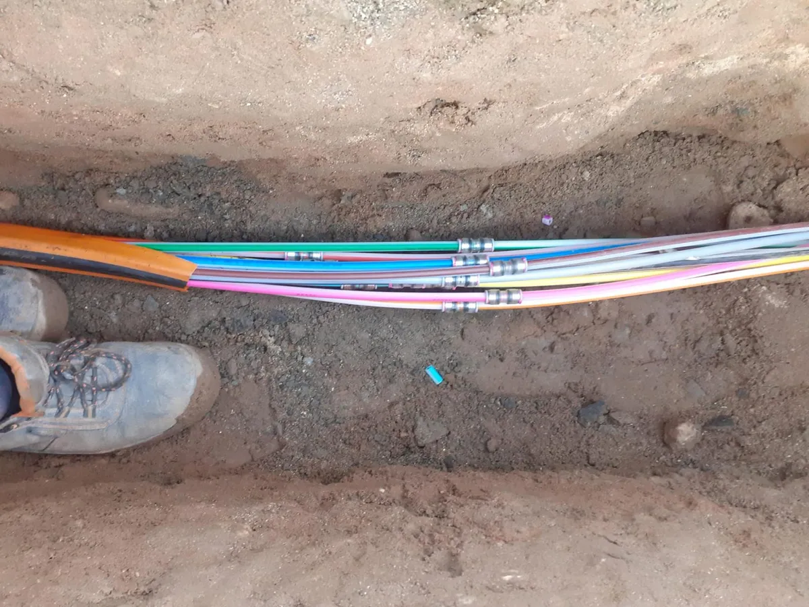

.jpg)
Glasfaser & Hausanschlüsse
Ausführung von Trassen und Hausanschlüssen für private und gewerbliche Einheiten.
Leistungen
Yildiz Tief & Netzausbau GmbH übernimmt die operative Umsetzung von Infrastrukturprojekten mit Fokus auf Glasfaser, Leitungsbau und fachgerechter Wiederherstellung.
Kernleistungen
Alle Leistungen sind auf stabile Netzinfrastruktur und saubere Baustellenabwicklung ausgerichtet.
Ausführung von Trassen und Hausanschlüssen für private und gewerbliche Einheiten.
Erweiterung bestehender Netzinfrastruktur für zusätzliche Versorgungspunkte.
Montage und Integration technischer Verteilpunkte im Feld.
Einbau belastbarer Schachtstrukturen für dauerhafte Leitungsführung und Wartung.
Effiziente und praxisorientierte Methoden für wirtschaftlichen Baufortschritt.
Wiederherstellung und Gestaltung von Oberflächen nach Tiefbaumaßnahmen.
Projektstruktur
Abgleich von Zielbild, Leistungsumfang und Rahmenbedingungen mit Auftraggebern und Partnern.
Koordinierte Baustellenarbeit mit Fokus auf Qualität, Sicherheit und Terminführung.
Übergabe der Leistung inklusive sauberer Oberfläche und nachvollziehbarer Abschlusslage.
Einsatzgebiet
Neben Projekten im Rhein-Main-Gebiet übernimmt Yildiz Tief & Netzausbau GmbH nach Anforderung auch Einsätze deutschlandweit. Die Abläufe bleiben dabei gleich: klar strukturiert, sauber dokumentiert, zuverlässig ausgeführt.
